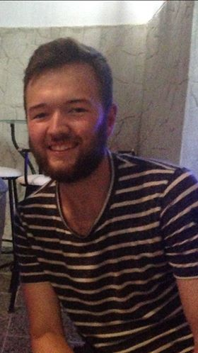

A brief introduction to the company's chief financial officer:
- 23 years of age from Bergen. 
- Got appointed CFO based on his experience in economics, which includes:
• A bachelor's degree in economics.
• Taken part in multiple projects during his education.
• Several years of experience trading stocks and bonds.
- In his leisure time, he enjoys listening to music, playing video games and cooking.
- He also loves cigars...